The goal of this project was to implement and apply fundamental image processing techniques to explore how filters, edges, and frequency components shape visual perception.
In Part 1, I build convolution functions from scratch, compare them with standard libraries, and analyze performance.
Then, I compute image derivatives, gradients, and edge maps, while also constructing and applying Gaussian and Difference of Gaussian filters to study smoothing and edge detection.
In Part 2, I extend these methods to practical applications: sharpening images with unsharp masking, creating hybrid images by combining low and high frequency components,
and performing multiresolution blending using Gaussian and Laplacian stacks to seamlessly merge images.
Part 1.1
Convolutions from Scratch
In this part, I implemented 2D convolutions using just numpy with two different methods: 1) Four nested loops and 2) Two nested loops.
I then compared my implementation from scratch with scipy's convolve2d function and analyzed the runtime and results.
As expected, the four-loop method to multiply and add up each kernel value with corresponding pixels is very inefficient. In the two-loop method, by taking slices of the padded image of the same size as the kernel
and computing the convolution with np.sum(curr * kernel), I'm utilizing Numpy's vectorized multiplication and sum, which speeds up the process by a factor of 6-7x.
However, using the scipy library and its built-in convolve2d function was even more efficient. This is due to it being implemented in C and runtime-optimized.
For all the convolutions, I used zero-padding, so for a kernel with size (kh, kw), I padded by (kh-1) // 2 rows and (kw-1) // 2 columns on both sides to ensure that the output image is
the same size as the input. Without this padding, the convolution would shrink the image since the kernel wouldn't be able to extend beyond the border pixels. For the scipy function call,
I used "mode = same" to automatically pad the image with zeros to ensure the output has the same dimensions as the input. From the results, we can see that all the methods give us the same output,
which is a slightly blurrier version of the original image (grayscaled).
Below you can find my implementations for convolution:
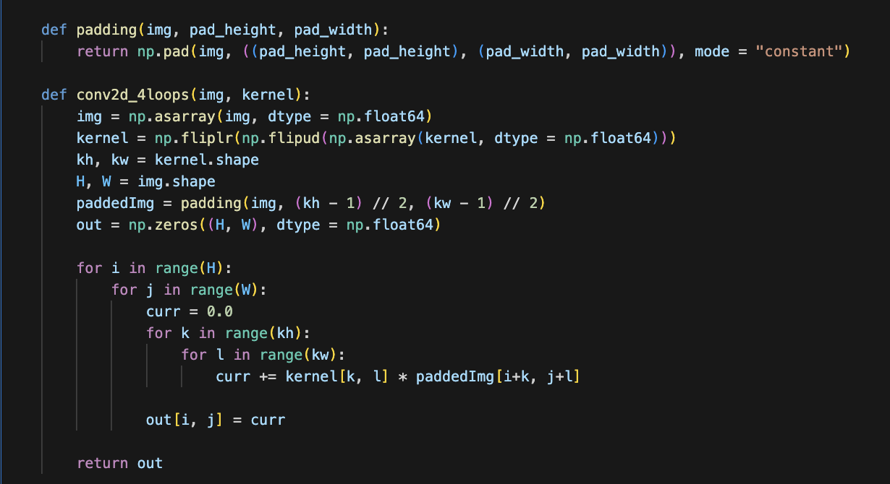
1. Four Loop Implementation
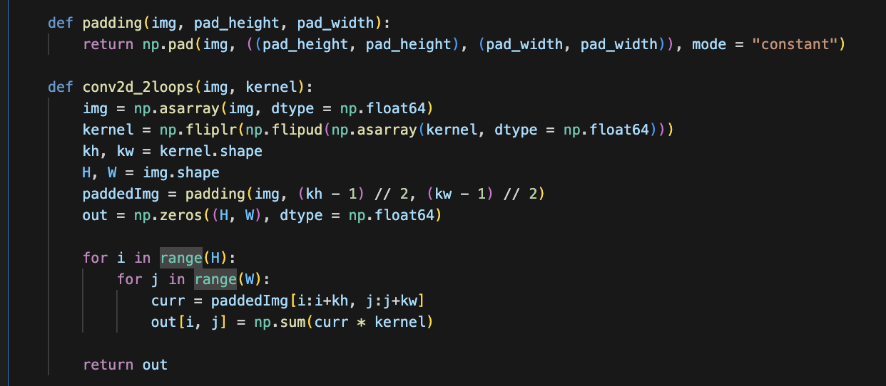
2. Two Loop Implementation
Next, I applied the humble finite difference dx and dy filters to the grayscaled original image using my 2 loop convolve function. The dx filter detects horizontal edges, while the dy filter detects vertical edges.
I made sure to normalize after my convolution to ensure clear results.
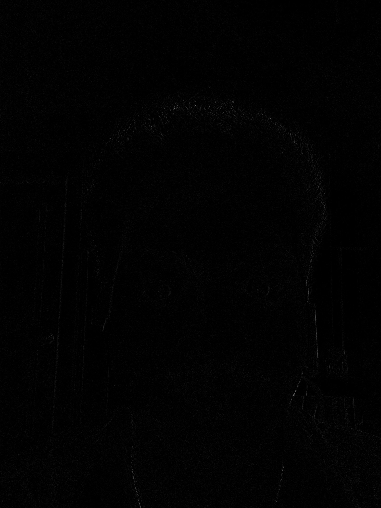
1. Dx Filter
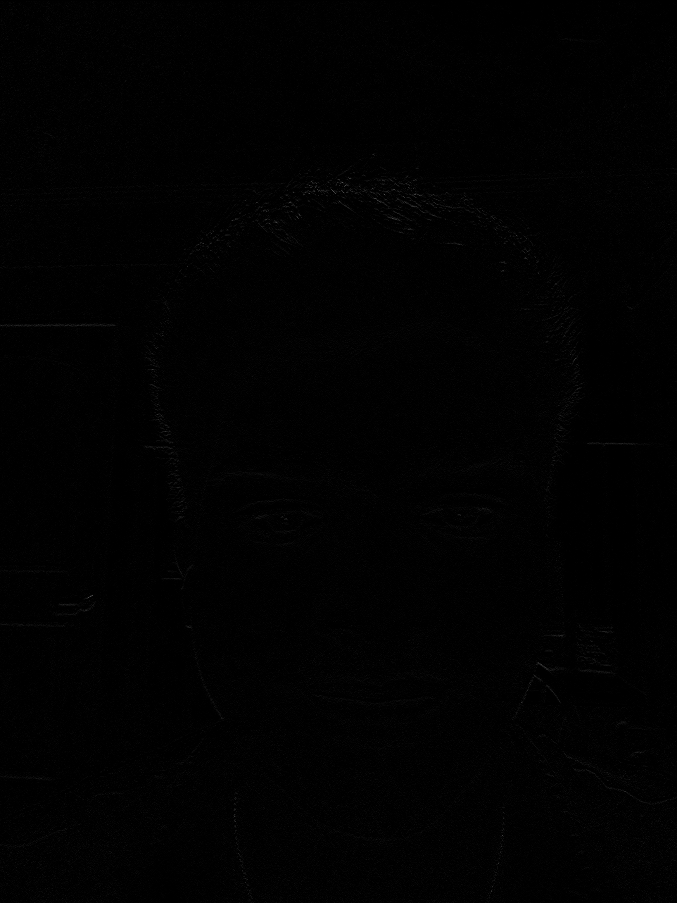
2. Dy Filter
Part 1.2
Finite Difference Operator
In this part, I tried to compute the gradient magnitude and edge map of the cameraman image using the dx and dy filters.
The gradient magnitude is computed as the square root of the dx convolution squared + the dy convolution squared.
I computed the edge map by setting a threshold for the gradient magnitude and outputting a binary image.
I decided to use an adaptive threshold for flexibility and I settled on 0.95 (picking the top 5% of gradients).
A higher threshold would result in fewer real edges being detected and a lower threshold would cause more noise to be included.
I tested a couple different thresholds from 80th percentile to 99th percentile and decided that I preserved the relevant edges while eliminating most noise at 95th.
1. Dx Filter 2. Dy Filter
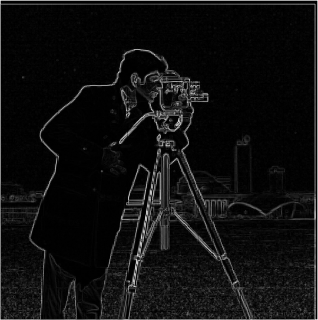
3. Grad Mag
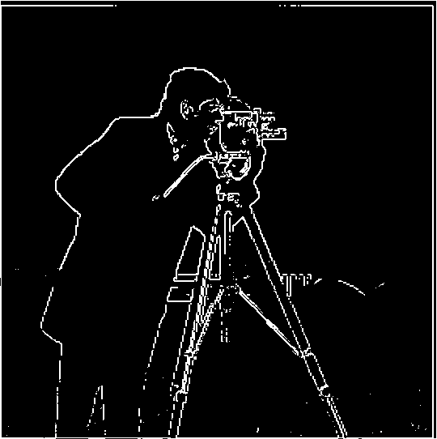
4. Edge Map
Part 1.3
Derivative of Gaussian (DoG) Filter
I then decided to improve my edge detection by first utilizing a Gaussian filter to smooth the images before I applied the Dx and Dy filters. I reasoned that this would
help me reduce noise in the image early, so that the dx and dy filters can detect true edges more clearly. I tested this approach with two different methods:
1) First, I tried performing the steps sequentially. I blurred the image using a Gaussian filter, then I applied the dx and dy filters to the modified image to compute grad mag and the edge map.
The results are below and we can see that with the same threshold, we have improvement in the definition of the edges and a reduction in discontinuities compared to the result in 1.2.
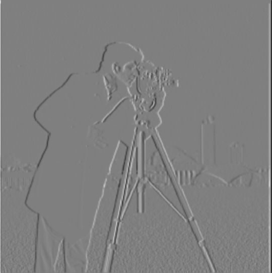
1. Dx Filter 2. Dy Filter
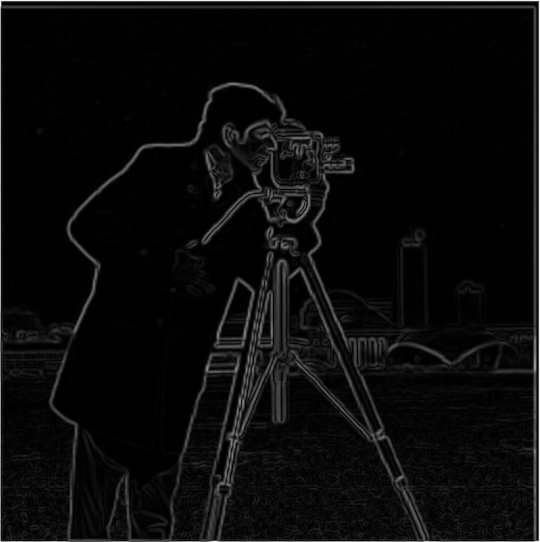
3. Grad Mag
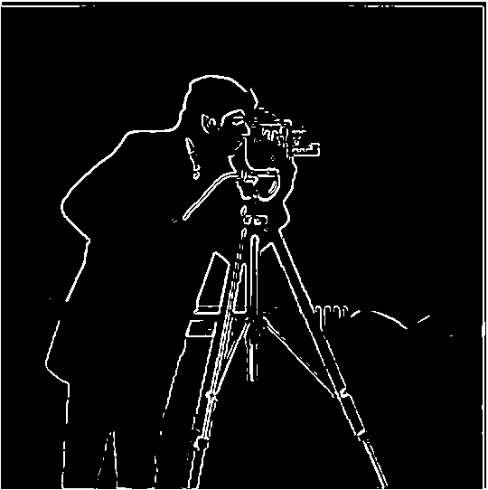
4. Edge Map
2) With the second method, I attempted to get the same result with a singular convolution instead of two. I convolved the Gaussian filter with the Dx and Dy filters to create a derivative of Gaussian
(DoG) filter. I then applied the DoG filter to the original image and got the resulting grad mag and edge map. We can see that, using the same threshold, these images look identical to those generated
with the first method.
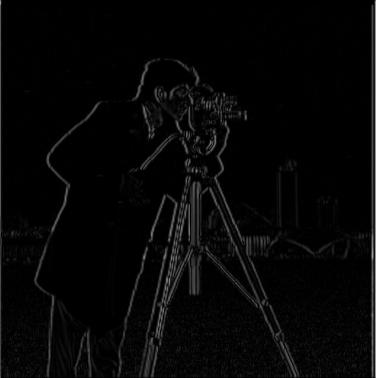
1. Dx Filter
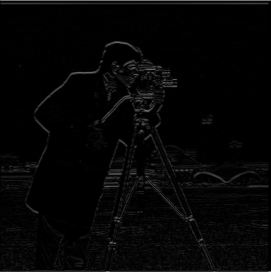
2. Dy Filter
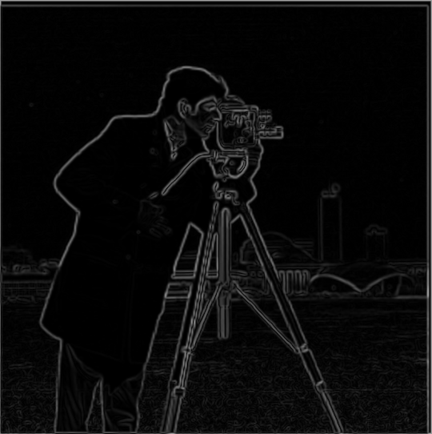
3. Grad Mag 4. Edge Map
Part 2.1
Image "Sharpening"
In this part, I implemented the unsharp mask filter to sharpen images. I then used this filter to sharpen the provided Taj Mahal image along with another of my selection.
My implementation of the unsharp mask filter used the following formula from lecture:
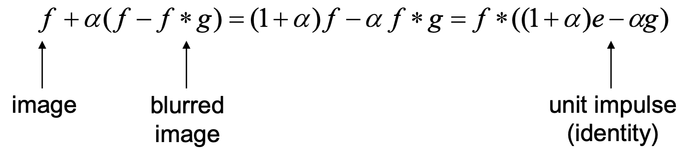
The goal for image sharpening is to enhance the high frequency components of our image. My steps for accomplishing this were to 1) Use a Gaussian filter (convolve with image) to get a blurred version of the image and 2) Subtract the blurred image from the original image.
The extent to which we want to sharpen our image is controlled by the alpha parameter in our formula. We see that alpha controls how much of the high frequency component we are adding back to the original image, so a higher alpha corresponds to a sharper image.
The primary design choices I made for this task were deciding the size of the guassian kernel I wanted to use and the alpha parameter. Originally, I elected to use a 9x9 gaussian kernel.
However, this was causing a halo effect and shadows/rims along some of the edges. This led me to re-evaluate and I adjusted to a 3x3 kernel which produced much better cleaner results.
The alpha parameter was chosen through experimentation and looping through a range of plausible values.
Below, we have the image, the blurred image, the high frequency components, and the final sharpened image:
1. Original Taj 2. Blurred Taj
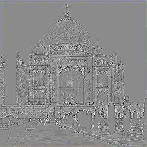
3. High Frequency Taj
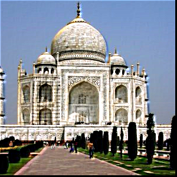
4. Sharpened Taj
I then repeated this process with an image of my own chipotle bowl! Originally, the blur wasn't strong enough so I used a larger kernel for a better blur.
1. Original Chipotle 2. Blurred Chipotle
3. High Frequency Chipotle 4. Sharpened Chipotle
Next, I decided to experiment with blurring an image and then sharpening it to recover the original image.
We find that sharpening a blurred image doesn't exactly recover the original image. When blurring, we lose some high-frequency detail, which we don't recover.
This is because sharpening an image can only amplify the existing high-frequency components (if those components are entirely missing then we can't amplify them).
This causes us to boost mid frequencies and the blur's transitions, which results in more outlining and less detail and genuine sharpness than the left image.
However, we notice that the sharpened image is still a substantial improvement from the blurry image.
The results are below:
1. Original Taj
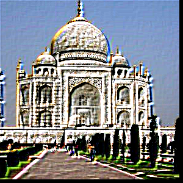
2. Resharpened Taj
1. Original Chipotle 2. Resharpened Chipotle
Finally, I decided to vary alpha values and visualize how my sharpening results differed.
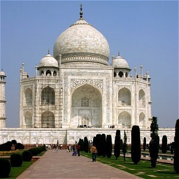
1. Taj Alpha 0.5
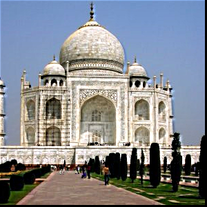
2. Taj Alpha 0.7
3. Taj Alpha 1.0 4. Taj Alpha 1.2
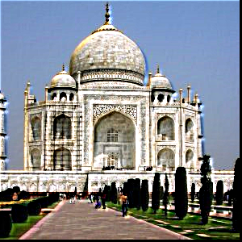
5. Taj Alpha 1.5
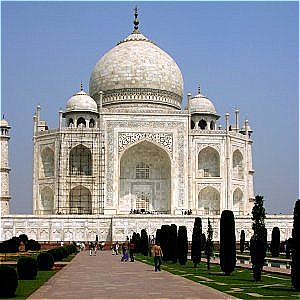
6. Taj Alpha 2.0
7. Taj Alpha 3.0
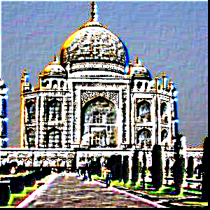
8. Taj Alpha 10.0
We see that as the alpha increases, the image becomes sharper. However, at very large alpha values, our image becomes a bit distorted and subject to halo effects.
The issue is that increasing the high-frequency components of the image can also increase noise.
Part 2.2
Hybrid Images
In this part of the project, I created hybrid images by blending the low-frequency content of one image with the high-frequency content of another.
To extract the low-frequency components, I applied a Gaussian blur to the first image using convolution with a Gaussian filter.
The parameter σ controls the amount of blurring: larger σ values smooth the image more, removing fine detail, while smaller σ values preserve more of the original structure.
The high-frequency components were obtained, similar to earlier, by subtracting a Gaussian-blurred version of the second image from the original, ensuring that only the fine detail information remained.
I then combined the low-pass and high-pass results, using weighting factors to balance their contributions, in order to form the final hybrid image.
A key part of this task was aligning the images, since misalignment can cause distracting artifacts.
I used the provided starter code to select corresponding points, recenter and rescale the images, rotate one image to match the other, and crop them so that both had the same dimensions.
Once aligned, the two images could be more easily combined.
The perceptual effect of the hybrid depends on viewing distance. Up close, the high-frequency details dominate perception, so you mainly see the high-pass image.
From farther away, or when the image is reduced in size, the high frequencies are no longer visible, and the smooth low-frequency structure dominates, so you perceive the low-pass image instead.
My goal was to accentuate this shift in interpretation as much as possible.
I experimented with different cutoff values for the Gaussian filters and created several hybrids, including the Derek and Nutmeg (Dutmeg) example as well as my own image pairs.
Below was my initial attempt on Derek and Nutmeg:
1. Original Derek 2. Original Nutmeg
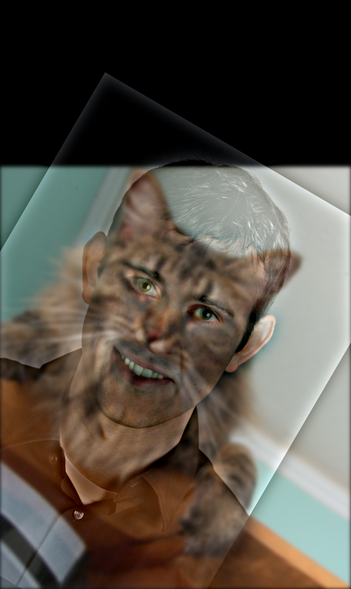
Hybrid Dutmeg (Derek + Nutmeg)
Below are some more examples on my own images, one of which showcases the full process with the Fourier Transforms.
First, we have John Denero + Michael Ball = JBall
1. Original John Denero
2. Original Michael Ball
Hybrid JBall
Some improvements and additional design choices that I made were to zero mean the high pass image and clip only at the very end, instead of clipping after each convolution.
Zero meaning the high pass ensured that any color/brightness biases wouldn't affect my resulting image.
Next, we have a cute baby panda and baby lion merged together. I include the full process for this with aligned images, fourier transforms, and filtered results.
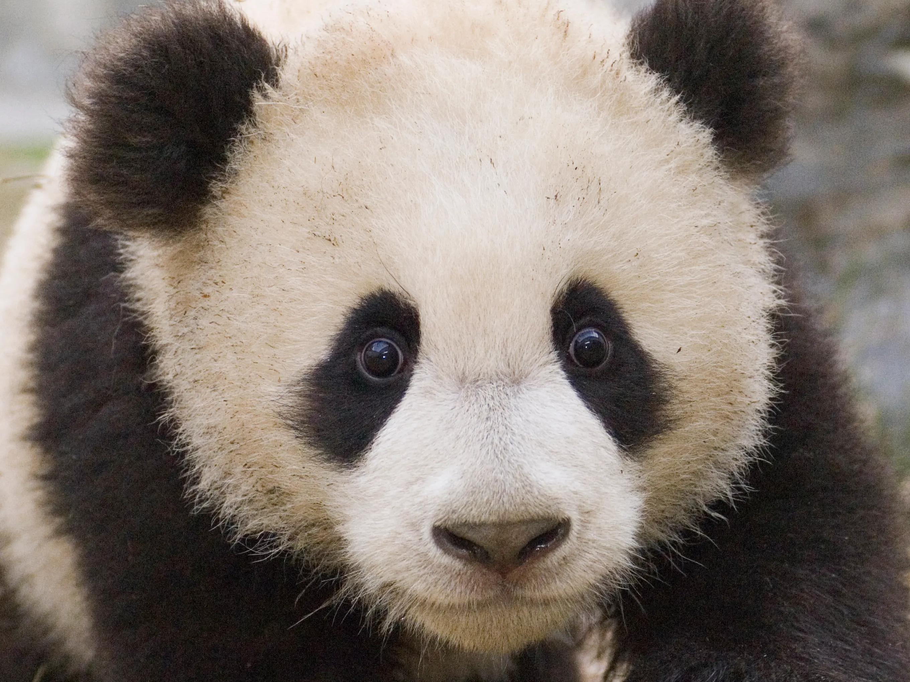
1. Original Panda 2. Original Lion
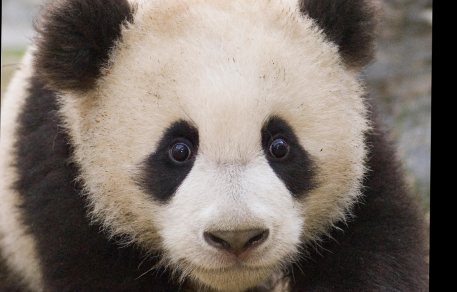
1. Aligned Panda 2. Aligned Lion
1. Panda (Low Frequency)
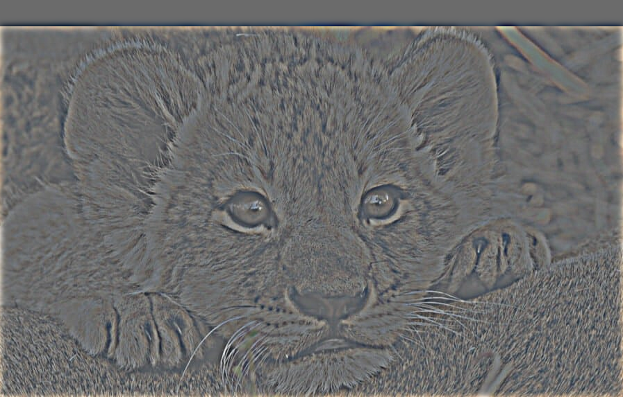
2. Lion (High Frequency)
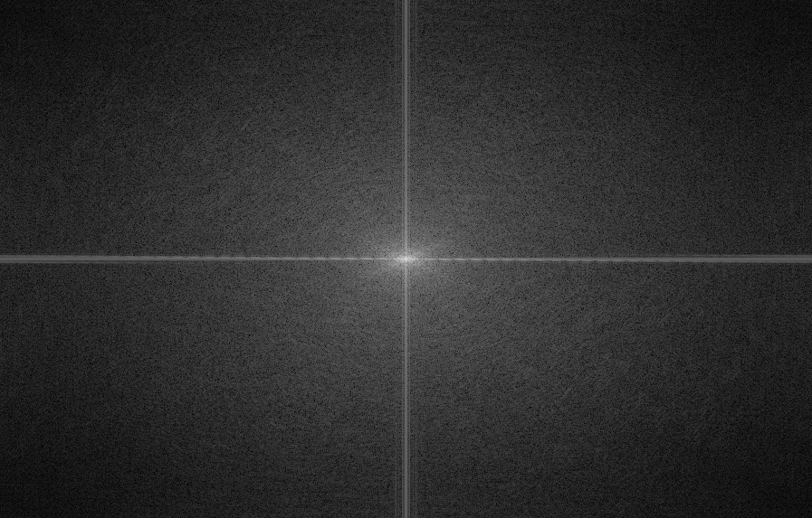
1. Panda Input Fourier
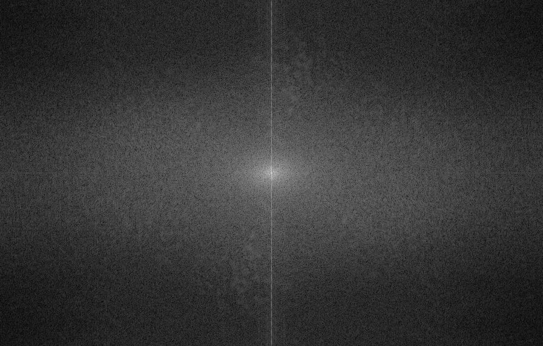
2. Lion Input Fourier
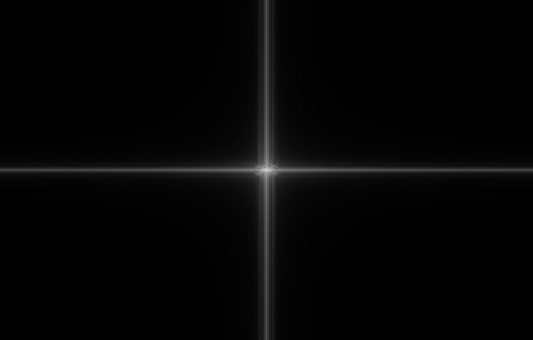
1. Panda Low Freq Fourier
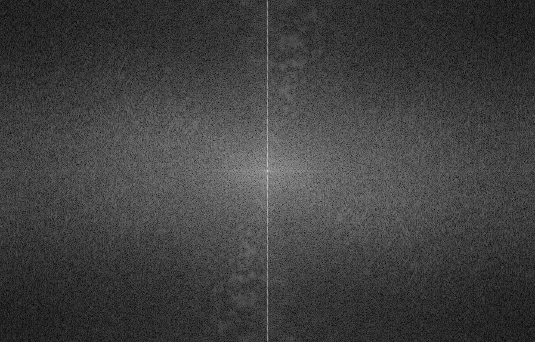
2. Lion High Freq Fourier
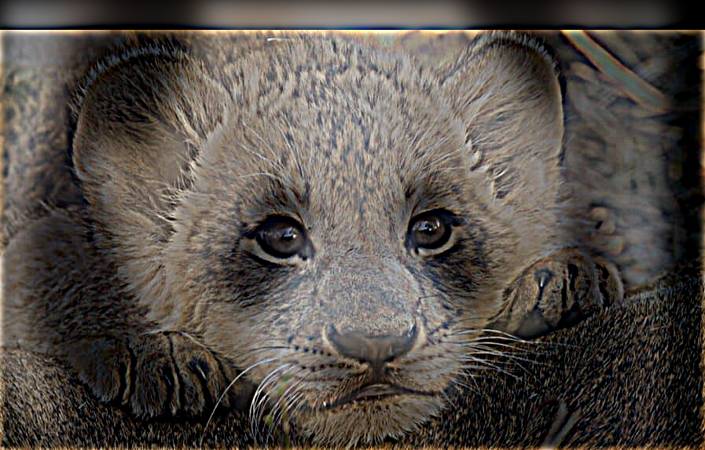
Hybrid Landa
Part 2.3 + 2.4
Gaussian and Laplacian Stacks and Multiresolution Blending
In this part of the project, I implemented multiresolution blending using Gaussian and Laplacian stacks to combine two images in a way that avoids sharp seams and produces smooth transitions. To begin, I constructed Gaussian stacks for both input images by repeatedly convolving with a Gaussian filter and progressively downsampling, with five levels used in total. The Gaussian filter is controlled by a σ value, which determines the amount of smoothing applied: larger σ values result in more pronounced blurring, while smaller σ values preserve more detail. From these Gaussian stacks, I then derived Laplacian stacks by subtracting each level of the Gaussian stack from the next, capturing the band-pass details at each scale. The final level of each Laplacian stack is just the coarsest level of the Gaussian stack, which retains the overall structure of the image.
Once the stacks were built, I used a mask-based blending approach to merge the images. The mask defines which parts of each image contribute to the final blend. To preserve smooth transitions, I also created Gaussian stacks of the masks, which ensured that boundaries between the two images were blurred gradually rather than producing visible seams. The simplest mask I used was a vertical half-and-half split, which allowed me to recreate the "Oraple" (apple–orange blend) example from the Burt and Adelson’s 1983 paper. In addition, I created an irregular circular mask centered on the image, which highlighted how the blending algorithm can smoothly combine arbitrary regions from each image.
By combining the Laplacian stacks of the two images at each level according to the corresponding Gaussian mask values, and then collapsing the stack back into a full-resolution image, I was able to produce convincing hybrid blends. The half-and-half mask demonstrated how multiresolution blending avoids the harsh seam you would get from a simple cut-and-paste, while the circular mask showed that more complex regions can also be blended seamlessly.